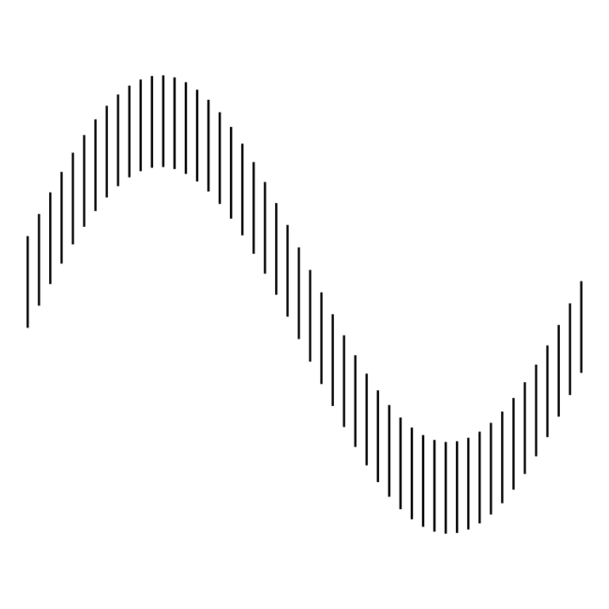
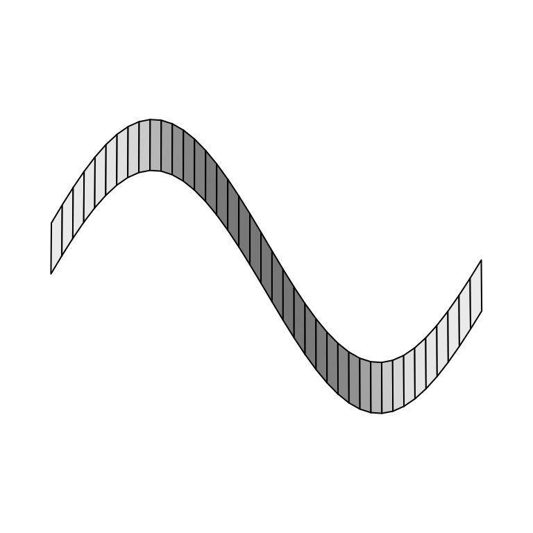
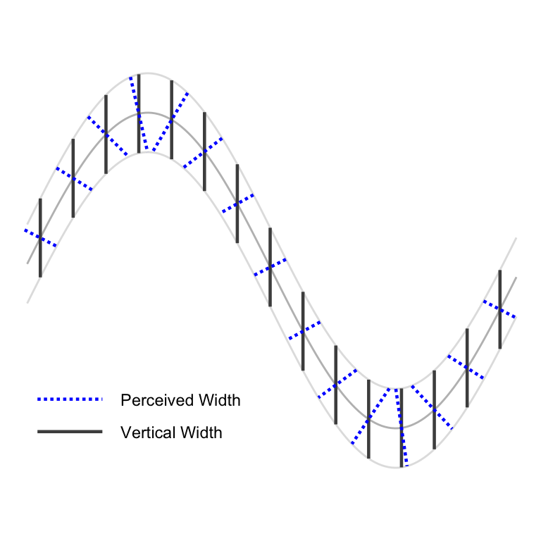

#' Function to data frame
#'
#' @param n number of values
#' @param ell extent of vertical range
#' @param x range of horizontal values
#' @param f function
#' @param fp first derivative of function f
#' @param f2p second derivative of function f
#' @return data frame with n function values and derivatives along the x axis for a range given by x
#' @example
#' f <- function(x) 2*sin(x)
#' fp <- function(x) 2*cos(x)
#' f2p <- function(x) -2*sin(x)
#' dframe <- function.frame(n=50, ell=1, x=c(0,2*pi), f, fp, f2p)
#' require(ggplot2)
#' qplot(x, y=ystart, yend=yend, xend=x, geom="segment", data=dframe) +
#' geom_point(aes(x,y))
function.frame <- function(n=200, ell=1, x, f, fprime, f2prime) {
x <- seq(x[1], x[2], length=n)
if (length(ell) != length(x)) ell <- rep(ell, length(x))
y <- f(x)
ystart <- y - ell/2
yend <- y + ell/2
# now correct for line illusion in vertical direction
dy <- diff(range(y))
dyl <- diff(range(c(ystart, yend)))
# fprime and f2prime are sensitive to the aspect ratio of a plot
# we represent it in framework of dy and dy+len
# needs to be fixed by factor a:
a <- dy/dyl
fp <- a*fprime(x)
f2p <- a*f2prime(x)
data.frame(x,y,ystart, yend, fp, f2p, a)
}
#' This function has to be split in parts and renamed
#'
#' Right now this function is a convoluted mess. We need to have separate
#' functions that
#' (1) create a data frame for a given function,
#' its first and second derivatives and range in x
#' (this is what the function function.frame is supposed to do),
#' (2) a trig transform function
#' (3) a quadratic approach function - better even, make (2) and (3) one function and use a parameter to decide on the method to use.
#' @example
#' f <- function(x) 2*sin(x)
#' fp <- function(x) 2*cos(x)
#' f2p <- function(x) -2*sin(x)
#' dframe <- createSine(n=50, ell=1, x=c(0,2*pi), f, fp, f2p)
#' require(ggplot2)
#' qplot(x=x, xend=x, y=y+ellx4.u, yend=y-ellx4.l, geom="segment", data=dframe, linetype=I(1)) +
#' theme_bw() + coord_fixed(ratio=1) +
#' xlab("x") + ylab("y") +
#' scale_x_continuous(breaks=seq(0, 2*pi, by=pi/2), minor_breaks=minor.axis.correction,
#' labels=c("0", expression(paste(pi,"/2")), expression(pi), expression(paste("3",pi, "/2")),
#' expression(paste("2",pi))))
createSine <- function(n=200, len=1, f=f, fprime=fprime, f2prime=f2prime, a=0, b=2*pi) {
# if(getquadapprox & !is.function(f2prime)) f2prime <- function(x) -1*f(x) # for backwards compatibility
x <- seq(a, b, length=n+2)[(2:(n+1))]
ell <- rep(len, length=length(x))
fx <- f(x)
ystart <- fx - .5*ell
yend <- fx + .5*ell
# now correct for line illusion in vertical direction
dy <- diff(range(fx))
dx <- diff(range(x))
# fprime works in framework of dx and dy, but we represent it in framework of dx and dy+len
# needs to be fixed by factor a:
# a <- dy/(dy + len)
dyl <- diff(range(c(ystart, yend)))
a <- dy/(dyl)
# ellx is based on the "trig" correction
ellx <- ell / cos(atan(abs(a*fprime(x))))
# ellx2 is based on linear approximation of f
ellx2 <- ell * sqrt(1 + a^2*fprime(x)^2)
# make this a data frame - ggplot2 doesn't do well with floating vectors
dframe <- data.frame(x=x, xstart=x, xend=x, y=fx, ystart=ystart, yend=yend, ell=ell, ellx = ellx, ellx2=ellx2)
# third adjustment is based on quadratic approximation of f.
# this needs two parts: correction above and below f(x)
# if(getquadapprox & is.function(f2prime)){
# secseg <- do.call("rbind", lapply(dframe$x, function(i) getSecantSegment(i, dframe, f, fprime, f2prime)))
# dframe$ellx3.u <- secseg$sec.ell1
# dframe$ellx3.l <- secseg$sec.ell2
# }
fp <- a*fprime(x)
f2p <- a*f2prime(x)
v <- 1 + fp^2
lambdapinv <- 0.5*(sqrt(v^2-f2p*fp^2*ell) + v)
# lambdaminv <- -0.5*(sqrt(v^2+f2p*fp^2*ell) + v)
lambdaminv <- 0.5*(sqrt(v^2+f2p*fp^2*ell) + v)
dframe$ellx4.l <- 0.5*abs(lambdapinv)/sqrt(v)
dframe$ellx4.u <- 0.5*abs(lambdaminv)/sqrt(v)
# dframe$lambdam <- 1/lambdaminv
# dframe$lambdap <- 1/lambdapinv
fp <- fprime(x)
f2p <- f2prime(x)
v <- 1 + fp^2
# lambda1 <- (-v + sqrt(v^2 - fp^2*f2p*ell))/(fp^2*f2p) # these two work
# lambda2 <- (-v + sqrt(v^2 + fp^2*f2p*ell))/(fp^2*f2p) # these two work
lambdaa <- -2*(sqrt(v^2 - f2p*fp^2*ell) + v)^-1 # identical to top
lambdab <- 2*(sqrt(v^2 + f2p*fp^2*ell) + v)^-1
dframe$lambdam <- lambdaa
dframe$lambdap <- lambdab
# qplot(a*(sqrt(1 + a^2*fprime(x)^2)*abs(lambdab))^-1, ellx4.u, data=dframe)
# qplot(a*(sqrt(1 + a^2*fprime(x)^2)*abs(lambdaa))^-1, ellx4.l, data=dframe)
# ggplot(aes(x, y+ell*(a*sqrt(v)*abs(lambdaa))^-1, xend=x, yend=y-ell*(a*sqrt(v)*abs(lambdab))^-1), data=dframe) + geom_segment()
dframe
}
#' what is the function doing? - in one sentence
#'
#' function description in a paragraph
#' @param x0 is a vector of locations for which the secant segments are supposed to be calculated
#' @param df df is a data frame
#' @param f function
#' @param fp first derivative of function f
#' @param f2p second derivative of function f
#' @return data frame consisting of .... what is the output of the function?
#' @example
#' # need an example here of how to use the function
getSecantSegment <- function(x0, df, f, fprime, f2prime){
# find the closest values of the grid df corresponding to x0
# doesn't work right now
ell.x0 <- sapply(x0, function(x) df$ell[which.min(x-df$x)])
dy <- diff(range(with(df, c(y+ell.x0, y-ell.x0))))
dx <- diff(range(df$x))
a <- dx/dy
#---- Actual Roots
# secSlope <- -a/fprime(x0)
# temp <- seq(min(df$x)-pi, max(df$x)+pi, .0001)
# leftend <- temp[which.min(abs(f(temp) + ell.x1 - secSlope*(temp-x1)))]
# rightend <- temp[which.min(abs(f(temp) - ell.x1 - secSlope*(temp-x1)))]
#----
#---- Approximation
lambda1 <- (-(fprime(x0)^2 + 1) + sqrt((fprime(x0)^2 + 1)^2 - 2*fprime(x0)^2*f2prime(x0)*ell.x0))/(fprime(x0)^2*f2prime(x0))
lambda2 <- (-(fprime(x0)^2 + 1) + sqrt((fprime(x0)^2 + 1)^2 + 2*fprime(x0)^2*f2prime(x0)*ell.x0))/(fprime(x0)^2*f2prime(x0))
x1 <- lambda1*fprime(x0)+x0
x2 <- lambda2*fprime(x0)+x0
y1 <- f(x0)-lambda1
y2 <- f(x0)-lambda2
#----
#---- Approximation V2 ----
# dx <- fprime(x0)
# dx1 <- 1+dx^2
# ddx <- f2prime(x0)
#
# corr1 <- 1/a*(((dx1)-sqrt(dx1^2-2*ddx*(dx1-1)^2*ell.x0))/(ddx*dx))
# corr2 <- 1/a*(((dx1)-sqrt(dx1^2+2*ddx*(dx1-1)^2*ell.x0))/(ddx*dx))
# if(abs(dx)<.01) {
# dx1 <- 2
# corr1 <- corr2 <- 0
# }
# if(abs(dx)<.01){
# ddx <- 1
# }
#
# x1 = corr1 + x0
# x2 = corr2 + x0
# y1 = f(x1)+ell.x0
# y2 = f(x2)-ell.x0
#----
df2 <- data.frame(x=x0, y=f(x0), deriv=fprime(x0),
sec.xstart=x1, sec.xend = x2,
sec.ystart=y1, sec.yend = y2,
ell.orig = 2*ell.x0)
df2$sec.ell1 <- a*.5*ell.x0/with(df2, sqrt((sec.yend-y)^2+(sec.xend-x)^2))
df2$sec.ell2 <- a*.5*ell.x0/with(df2, sqrt((y-sec.ystart)^2+(x-sec.xstart)^2))
# df2$sec.ell1 <- with(df2, sqrt((sec.yend-y)^2+(sec.xend-x)^2))
# df2$sec.ell2 <- with(df2, sqrt((y-sec.ystart)^2+(x-sec.xstart)^2))
df2$type <- "Perceived Width"
df2$a <- a
return(df2)
}
correctx <- function(z, fprime, a=0, b=2*pi, w=1) {
# w = 1/(shrink+1)
const <- integrate(function(x) abs(fprime(x)), a, b)$value
trans <- sapply(z, function(i) integrate(function(x) abs(fprime(x)), a, i)$value*(b-a)/const + a)
# alternatively to the rowMeans, you could report back
# trans*(1-w) + z*w
trans*w + z*(1-w)
}
f <- function(x) 2*sin(x)
fprime <- function(x) 2*cos(x)
f2prime <- function(x) -2*sin(x)
x <- seq(0, 2*pi, length=42)[2:41]
data <- do.call("rbind", lapply(seq(-.5, .5, 1), function(i) data.frame(x=x, y=3*sin(x), z=i)))
data.persp <- reshape2::acast(data, x~z, value.var="y")
x <- sort(unique(data$x))
y <- sort(unique(data$y))
z <- sort(unique(data$z))
dframe <- createSine(n = 50, len = 1, f=f, fprime=fprime, f2prime=f2prime)
dframe %>%
ggplot(aes(x = xstart, xend = xend, y = ystart, yend = yend)) + geom_segment() + coord_fixed() +
theme_void()
par(mar = c(0, 0, 0, 0))
persp(x, z, data.persp, xlab="", ylab="", zlab="", theta=0, phi=45, border="black", shade=.35, col="white", xlim=c(-pi/12, 2*pi+pi/12), ylim=c(-1, 1), scale=FALSE, box=FALSE, expand=2.5/pi, d=50) # , ltheta=0, lphi=-15
# persp(x, z, data.persp, xlab="", ylab="", zlab="", theta=0, phi=45, border="black", shade=.35, col="white", xlim=c(-pi/12, 2*pi+pi/12), ylim=c(-1.75, 1.75), scale=FALSE, box=FALSE, expand=3/pi, d=3) # , ltheta=0, lphi=-15
dframe <- createSine(n = 150, len = 1, f=f, fprime=fprime, f2prime=f2prime)
dframe$ystartcts <- dframe$ystart
dframe$yendcts <- dframe$yend
dframe[1:150,c(2, 3, 5, 6)] <- NA
dframe[(1:15)*10-5, c(2, 3)] <- dframe[(1:15)*10-5, 1]
dframe[(1:15)*10-5, 5] <- dframe[(1:15)*10-5, 4] - .5
dframe[(1:15)*10-5, 6] <- dframe[(1:15)*10-5, 4] + .5
dframe$type <- "Vertical Width"
idx <- which(!is.na(dframe$xstart))
dframe$ell <- dframe$ell/2
dframe.1 <- getSecantSegment(dframe$xstart[idx], dframe, f, fprime, f2prime)
dframe.1$x <- dframe$x[idx]
dframe.1$y <- dframe$y[idx]
dframe.1$ystartcts <- dframe$ystartcts[idx]
dframe.1$yendcts <- dframe$yendcts[idx]
names(dframe.1) <- c("x", "y", "deriv", "xstart", "xend", "ystart", "yend", "ell", "ell.quad1", "ell.quad2", "type", "a", "ystartcts", "yendcts")
dframe.1$vangle <- with(dframe.1, atan(deriv))
dframe <- bind_rows(dframe, dframe.1)
dframe$type <- factor(dframe$type)
ggplot(aes(x=x, y=y), data=dframe, colour=I("grey50")) +
geom_line(color = "grey") + theme_void() +
geom_line(aes(y=ystartcts), colour="grey50", alpha = .25) +
geom_line(aes(y=yendcts), colour="grey50", alpha = .25) +
geom_segment(data=subset(dframe, !is.na(type)),
aes(x=xstart, xend = xend, y=ystart, yend=yend, colour=type, linetype=type), linewidth=0.8) +
xlab("") + ylab("") +
coord_equal(ratio=1) + scale_colour_manual("", values=c("blue", "grey30")) +
# geom_text(aes(label=paste("theta", "%~~%", round(abs(vangle)/pi*180), "^o", sep=""),
# x=pmax(xstart, xend)/2+x/2+.35 , y=y-sign(vangle)*.6+.02), colour="blue",
# data=dframe.1, parse=TRUE, hjust=.9, vjust=.5, size=3) +
scale_x_continuous(breaks=seq(0, 2*pi, by=pi/2),
labels=c("0", expression(paste(pi,"/2")), expression(pi),
expression(paste("3",pi, "/2")), expression(paste("2",pi)))) +
scale_linetype_manual("", values=c("11", "solid")) +
theme(legend.key.width = unit(3, "line"), plot.margin = unit(c(0,0,0,0), "cm"), legend.position=c(.25, .2)) 

